Глава 4. КВАНТОВАЯ МЕХАНИКА
§1. ВОЛНЫ ДЕ БРОЙЛЯ§2. СООТНОШЕНИЯ НЕОПРЕДЕЛЁННОСТЕЙ ГЕЙЗЕНБЕРГА
§3. УРАВНЕНИЕ ШРЕДИНГЕРА
§1. ВОЛНЫ ДЕ БРОЙЛЯ
1. Основной физической идеей квантовой теории является идея о том, что корпускулярно-волновая двойственность свойств характерна не только для фотонов, частиц электромагнитного поля, но и для всех частиц вещества: электронов, протонов, нейтронов, атомов, молекул и т.д.
В 1924 году де Бройль писал: "Каждое движущееся тело сопровождается волной, и разделение движения тела и распространения волны является невозможным". Идея де Бройля о волновых свойствах частиц вещества блестяще подтвердилась экспериментально.
Длина волны де Бройля задаётся формулой:
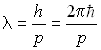
,где h и  - постоянные Планка, р - импульс частицы (тела).
- постоянные Планка, р - импульс частицы (тела).
2. При решении задач необходимо учитывать, является ли частица релятивистской или классической. Импульс частицы:
а) в классическом (нерелятивистском) случае:
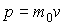
б) в релятивистском случае:
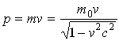
,где m0 - масса покоя, с - скорость света в вакууме.
3. Критерий того, является ли движущаяся частица (тело) релятивистской, или нет, задаётся соотношением:
если
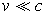
, или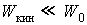
- частица классическая,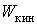
,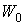
соответственно кинетическая энергия и энергия покоя, если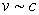
, или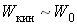
- частица релятивистская.4. Импульс частицы связан с кинетической энергией:
а) в нерелятивистском случае:
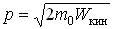
;б) в релятивистском случае:
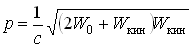
,где
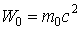
- энергия покоя.5. Если заряженная частица с зарядом q ускоряется в электрическом поле, пройдя разность потенциалов U, то волна де Бройля такой частицы задаётся соотношением:
а) в классическом случае:
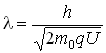
;б) в релятивистском случае:
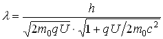
.6. Характеристиками волны являются её групповая
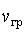
и фазовая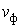
скорости. Эти понятия можно использовать и для волн де Бройля.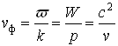
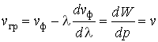
где ω, λ - частота и длина волны де Бройля, W, P, v - энергия, импульс и скорость частицы,
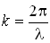
- волновое число.7. Пользуясь основным соотношением между энергией и импульсом частицы, фазовую скорость можно выразить следующим образом:
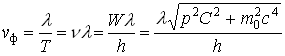
,что говорит о дисперсии волн де Бройля (явление дисперсии характерно для волновых процессов).
8. Экспериментальным подтверждением существования волн де Бройля являются результаты опытов по дифракции движущихся частиц (в том числе, атомов, молекул). Для объяснения дифракционной картины используется формула Вульфа - Брэггов:
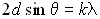
,где k = 1,2,3,... - порядок спектра, d - межплоскостное расстояние (постоянная кристаллической решётки), θ - угол скольжения (угол между направлением движения частицы и поверхностью кристалла).
§2. СООТНОШЕНИЯ НЕОПРЕДЕЛЁННОСТЕЙ ГЕЙЗЕНБЕРГА
1. В основе соотношений неопределённостей лежит корпускулярно-волновая двойственность свойств частиц. Возможность задавать для частицы лишь вероятность пребывания в данной точке приводит к тому, что классические понятия координаты частицы, импульса могут применяться лишь в переделах, установленных соотношениями неопределённостей.
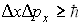
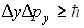
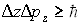
.В этих формулах
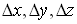
характеризуют неопределённости в координатах частицы, а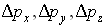
- пределы, в которых могут быть заключены проекции импульса частицы на оси. Чем точнее заданы координаты частицы, тем более неопределены компоненты её импульса.2. Так как
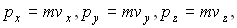
то уравнения, связывающие неопределенности координат и импульса, примут вид: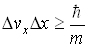
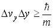
 .
.
3. Аналогичное соотношение неопределённостей существует между энергией W и временем t. Если частица некоторое время  находится в нестационарном (например, возбуждённом) состоянии, то энергия W этого состояния может быть определена лишь с точностью до величины
находится в нестационарном (например, возбуждённом) состоянии, то энергия W этого состояния может быть определена лишь с точностью до величины  . Неопределённость энергии
. Неопределённость энергии  связана со временем
связана со временем  соотношением:
соотношением:
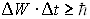
.4. Шириной Г энергетического уровня называется неопределённость энергии квантовомеханической системы (атома, молекулы и др), обладающей дискретными уровнями энергии Wk в состоянии, которое не является строго стационарным. Например, если электрон в атоме находится в возбуждённом состоянии, то размытие уровня энергии и называется уширением уровня
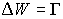
. Значение ширины уровня Г связано со средним временем t пребывания системы в возбуждённом состоянии соотношением неопределённостей: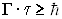
.Для строго стационарного состояния
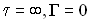
. Ширина уровня может быть и очень малой по сравнению с энергией уровня (например, для ядра при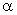
-распаде), и сравнимой со значениями расстояний между энергетическими уровнями (например, для возбуждённых ядер, испускающих нейтроны при квантовых переходах). Ширина уровня пропорциональна сумме вероятностей всех возможных переходов с этого уровня - и спонтанных , и вызванных различными следствиями.5. Ширина энергетического уровня Г определяет ширину спектральной линии. Зависимость интенсивности I испускания или поглощения от частоты обычно имеет максимум при частоте перехода
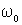
(рисунок 1), которая определяется соотношением: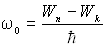
,где
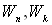
- энергии состояний, между которыми происходят переходы.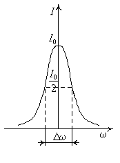
Рисунок 1.
Шириной (полушириной) спектральной линии называют интервал частот
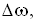
отсчитываемый по кривой зависимости интенсивности от частоты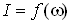
при значении интенсивности, равной половине максимальной интенсивности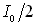
. Так как длина волны и частоты излучения связаны соотношением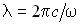
, то ширину спектральной можно характеризовать интервалом длин волн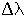
, учитывая, что: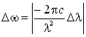
.Уширение отражает степень немонохроматичности спектральных линий и связано со временем жизни
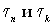
атомной системы в состояниях, характеризуемых квантовыми числами n и k.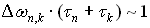
,где
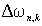
- естественная ширина спектральной линии. Для установления немонохроматичности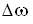
ограниченного цуга волн (атом излучает свет в виде отдельных импульсов - цугов волн) следует пользоваться соотношением неопределённостей в виде, отличном от формул (17-20).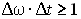
,где
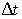
- длительность излучения, - ширина спектра.Пространственная протяжённость цуга волн в вакууме задаётся соотношением:
,
где с = 3 × 108 м/с - скорость света в вакууме.
Чем короче цуг волн, тем шире его спектр, т.е., тем сильнее цуг отличается от монохроматической волны (сравните с волновым пакетом).
6. С помощью соотношений неопределённостей можно оценить минимальную энергию частицы в любом силовом поле U=U(r).Для этого необходимо записать полную энергию частицы в виде суммы кинетической и потенциальной:
.
Затем воспользоваться соотношением неопределённостей координаты и импульса. Для центрально-симметричного поля эту формулу можно переписать в виде . С учётом того, что частица квантовая, надо сделать приближения ~ p, ~ r, найти зависимость энергии частицы от координат:
и исследовать эту функцию на экстремум, определив наименьшую возможную координату, а затем и минимальную энергию.
Если силовое поле симметрично относительно некоторой оси (например, ), то следует неопределённость в координате полагать равной двойному значению координаты .
§3. УРАВНЕНИЕ ШРЕДИНГЕРА
1. Уравнение Шредингера - основное динамическое уравнение релятивистской квантовой механики. Оно играет такую же фундаментальную роль, как уравнение Ньютона в классической механике и уравнения Максвелла в классической теории электромагнетизма.
Уравнение Шредингера описывает изменение во времени состояния квантовых объектов, характеризуемое волновой функцией: . Если известна волновая функция в начальный момент времени, то решая уравнение Шредингера, можно найти в любой последующий момент времени t.
Для частицы массы m, движущейся в потенциальном поле U=U(r), временное уравнение Шредингера имеет вид:
,
где
- оператор Лапласа, x, y, z – координаты.
Решение дифференциального уравнения есть - волновая функция, которая прямого физического смысла не имеет. Смысл имеет квадрат модуля волновой функции , как плотность вероятности обнаружения частицы (системы) в момент времени t в квантовом состоянии в точке пространства с координатами x, y, z в объеме .
Эта вероятностная интерпретация временной функции - один из основных постулатов квантовой механики.
2. Стационарное (не зависящее от времени) уравнение Шредингера имеет вид:
,
где W - полная, а (W-U) - кинетическая энергия частицы (системы). Потенциальная энергия в уравнении Шредингера не зависит от времени. Решением такого уравнения является функция вида:
.
Оператор Лапласа в сферических координатах имеет вид:
3. Зная -функцию, можно рассчитать поведение микрочастиц. Вероятность обнаружения частицы в объёме V определяется:
.
В одномерном случае вероятность найти частицу в интервале от X1 до X2 рассчитывается так:
4. Среднее значение любой характеристики микрочастицы вычисляется по формуле:
в одномерном случае:
- величины, определяющие границы изменения величины x, они могут быть любые, включая и, и 0, и .
5. Если необходимо найти наиболее вероятное положение частицы в пространстве, то необходимо исследовать на экстремум функцию .
6. Функция , где - функция в комплексном виде, а -функция, сопряжённая . Возвращаясь к формуле (42), имеем:
Тогда ,
так как , то
не зависит от времени, что означает стационарное (независимое от t) состояние системы.
7. Для квантовых систем, движение которых происходит в ограниченной области пространства, решение уравнения Шредингера существует только для некоторых дискретных значений: нумерация которых определяется набором целых квантовых чисел. Значениям ряда соответствуют волновые функции Значения называются спектром собственных значений энергии, а соответствующие волновые функции - -спектром собственных функций. (i=1,2, …n).
Рисунок 2.
8. Частица массой m в бесконечной прямоугольной яме шириной  .
.
Собственные волновые функции
,
где n - квантовое число, n=1,2,3….
Собственные значения энергии:
9. Гармонический осциллятор
- собственная частота;
- потенциальная энергия.
Собственные значения энергии
,
где n=1,2…. - квантовое число, k- коэффициент жёсткости действующей упругой силы, m - масса частицы.

Рисунок 3.
10. Движение квантовой частицы отличается от движения классической частицы. В квантовой механике существует конечная вероятность обнаружить частицу в классически запрещённой области пространства.
Потенциальный барьер - ограниченная в пространстве область высокой потенциальной энергии частицы в силовом поле. Если энергия частицы больше высоты потенциального барьера , то в квантовой механике существует ненулевая вероятность отражения частицы от такого барьера, хотя в классической физике частица при таких условиях двигается, не замечая барьера. При квантовая частица проходит (просачивается) сквозь потенциальный барьер. Такое явление называется туннельным эффектом. Вероятность прохождения частицей барьера называется коэффициентом прозрачности D.
Решая уравнение Шредингера для прямоугольного потенциального одномерного барьера высотой и шириной , получим коэффициент прозрачности : (52)
Для потенциального одномерного барьера произвольной формы (рисунок 1):
и  определяются при условии , где задается явной функцией координаты . Согласно рисунку равенство определяет координату
определяются при условии , где задается явной функцией координаты . Согласно рисунку равенство определяет координату  , – координату . В формуле присутствует под знаком корня, где x – переменная, которая учитывается при интегрировании.
, – координату . В формуле присутствует под знаком корня, где x – переменная, которая учитывается при интегрировании.
Рисунок 4.
Движение в центрально-симметричном поле (примером является движение одного электрона в поле ядра с зарядом ). Если Z=1, то это атом водорода, при Z>1 – атом называется водородоподобным.
При решении этой задачи надо использовать уравнение Шредингера в сферических координатах. Потенциальная энергия в СИ имеет вид:
(смотри раздел 4)
Собственные функции для описания поведения электрона в водородоподобных атомах:
где , –радиальная и угловая волновые функции, n, l, m – квантовые числа (главное, орбитальное, магнитное). При переходе в сферическую систему координат элемент объема
Пределы полного изменения параметров от до ; – от  до
до  ; – от
; – от  до .
до .
Вероятность обнаружения электрона в шаровом слое от до от ядра равна
.
Тогда плотность вероятности расположения в шаровом слое толщиной равна
.
И при определении наиболее вероятного расстояния электрона до ядра на экстремум исследуют именно функцию .